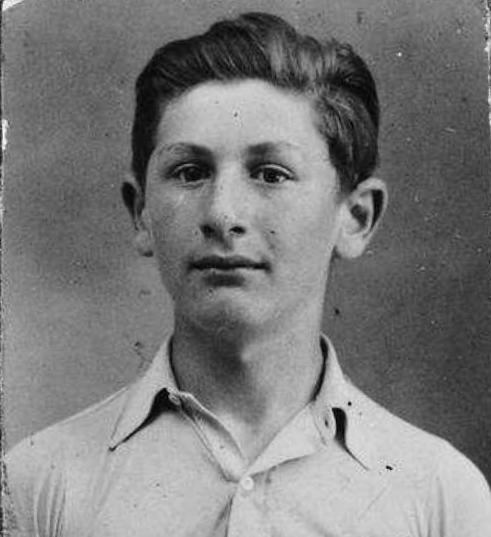

Portrait d’archive
Emile Niederman [alias Bottin]
Emile NIEDERMAN [alias Émile Bottin]
Emile NIEDERMAN est né le 09/09/1928 à Paris en France.
Rassemblé à Nice, il est déporté à Auschwitz le 30/06/1944 par le convoi n°76. Il est mort en déportation le 21/03/1945. Il avait 17 ans.
Déclaré officiellement "mort en déportation" au JO n°174 du 28/7/1995
Dernière adresse connue : 06320 (Cap d'Ail)
Ecole : Lycée de Monaco (en 2nde)
Nom : NIEDERMAN
Prénom(s) : Emile
Date naissance : 09/09/1928
Âge (ans) : 15
Lieu naissance : Lyon
Pays ou département : Rhône
Lieu rassemblement : Nice
Dernière adresse : ?
Ville : Cap d'Ail (Alpes Maritimes)
Code postal : 06320
N° Convoi : 76
Date déportation : 30/06/1944
Informations diverses : Émile est né le 9 septembre 1927 à Paris. Le 17 juillet 1942, il assiste depuis l'appartement des voisins d'en face à l'arrestation de son père Geza. Il n'a pas encore 15 ans. Quelques semaines plus tard, il rejoint son frère Robert près de Lyon. Robert l'envoie à Nice chez leur oncle Marcel, où il le rejoint ensuite avec leur mère. En juin 1943, Emile obtient son premier bachot avec un an d'avance.
En juin 44, Robert quitte Fouillouse pour Valserre, en espérant que son frère le rejoindra bientôt. Dans ce but il cherche un emploi pour lui. Dans l'intervalle, Émile veut rejoindre sa mère cachée au Cap d'Ail. Il se joint à un groupe de résistants italiens. Le groupe est arrêté par les Allemands. Émile est conduit à l'hôtel Excelsior à Nice, au plus tard le 19 juin. Il arrive à Drancy le 28 juin 1944 sous son faux nom, Émile Bottin. Il est déporté à Auschwitz le 30 juin 44 par le convoi n°76. À Auschwitz on lui tatoue sur le bras gauche le numéro A 16.954, et on le considère comme Mischling (nom donné par les Nazis aux personnes d'ascendance partiellement juive). Émile meurt d'épuisement à Buchenwald après la marche de la mort, en mars 1945 (Source: L’echo de leur voix).
À l'automne 43, pour fuir les Allemands, à la fin de l'occupation italienne, la famille se cache près de Sclos-de-Contes, dans l'arrière-pays niçois. Après quelques mois de répit il faut fuir de nouveau. La famille reçoit l'aide de Joseph et Ludovina Gallo, puis Robert et Émile rejoignent Ourson à Saint Paul sur Ubaye, près de Barcelonnette, puis trouvent un travail comme domestiques agricoles à Fouillouse, un des villages les plus hauts d'Europe. En juin 44, Robert quitte Fouillouse pour Valserre, en espérant que son frère le rejoindra bientôt. Dans ce but il cherche un emploi pour lui. Dans l'intervalle, Émile veut rejoindre sa mère cachée au Cap d'Ail. Il se joint à un groupe de résistants italiens.Le groupe est arrêté par les Allemands. Émile est conduit à l'hôtel Excelsior à Nice, au plus tard le 19 juin. Il arrive à Drancy le 28 juin 1944 sous son faux nom, Émile Bottin. Il est déporté à Auschwitz le 30 juin 44 par le convoi n°76.
À Auschwitz on lui tatoue sur le bras gauche le numéro A 16.954, et on le considère comme Mischling (nom donné par les Nazis aux personnes d'ascendance partiellement juive). Émile meurt d'épuisement à Buchenwald après la marche de la mort, en mars 1945. Carte de déporté de Mauthausen (YVS et Alrosen).
Niederman (Emile), né le 9 septembre 1927 à Paris (15e) (Seine), décédé le 21 mars 1945 à Buchenwald (Allemagne) !! (JO n°174 du 28/7/1995).
Lieu de déportation : Auschwitz
Lieu de départ : Drancy
Nombre total de déporté·e·s du convoi : 1100
Gazé·e·s à l'arrivée : 479 (43,5 %)
Survivant·e·s en 1945 : 182 (16,5 %)